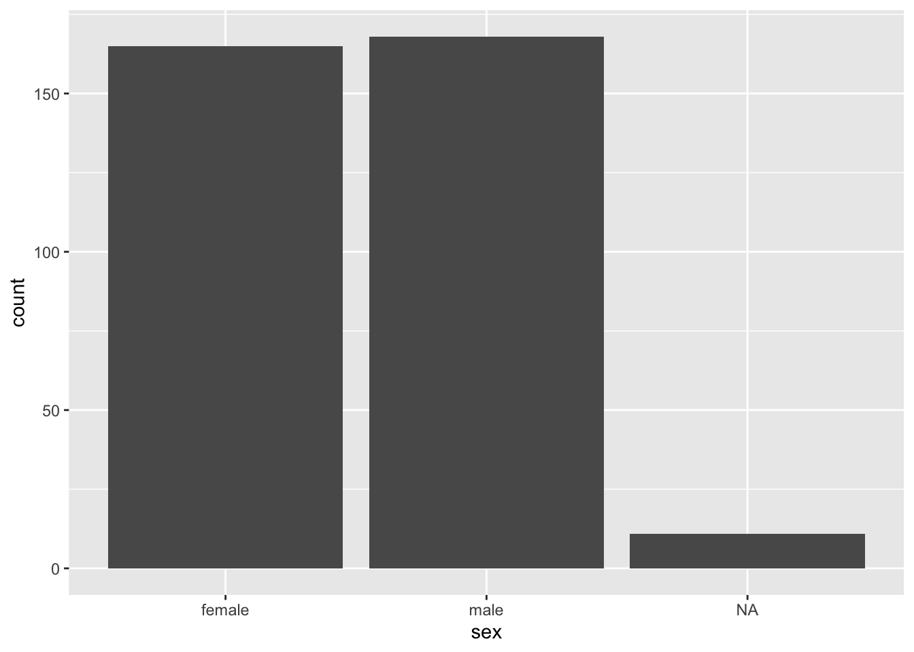
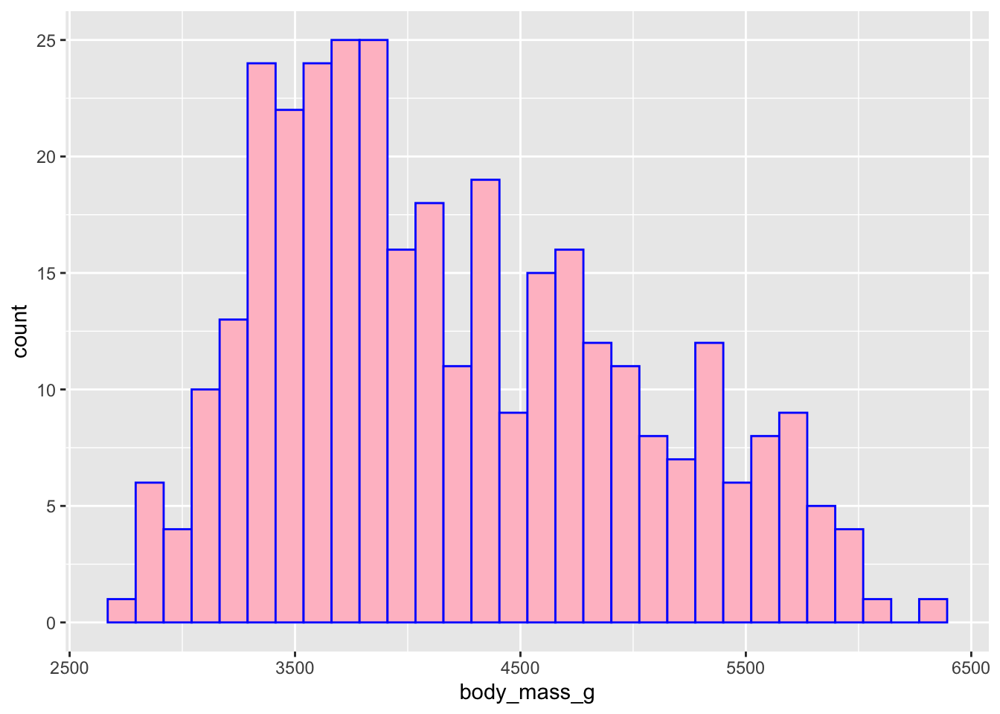

#install.packages("tidyverse")
library(tidyverse)Hello World
Data science workshop at GJU
1 Install packages
2 Data importing
2.1 Import data from a package
library(palmerpenguins)
penguins# A tibble: 344 × 8
species island bill_length_mm bill_depth_mm flipper_length_mm body_mass_g
<fct> <fct> <dbl> <dbl> <int> <int>
1 Adelie Torgersen 39.1 18.7 181 3750
2 Adelie Torgersen 39.5 17.4 186 3800
3 Adelie Torgersen 40.3 18 195 3250
4 Adelie Torgersen NA NA NA NA
5 Adelie Torgersen 36.7 19.3 193 3450
6 Adelie Torgersen 39.3 20.6 190 3650
7 Adelie Torgersen 38.9 17.8 181 3625
8 Adelie Torgersen 39.2 19.6 195 4675
9 Adelie Torgersen 34.1 18.1 193 3475
10 Adelie Torgersen 42 20.2 190 4250
# ℹ 334 more rows
# ℹ 2 more variables: sex <fct>, year <int>2.2 Import data from your computer
penguins_data <- read_csv("datafile.csv")
penguins_data# A tibble: 344 × 9
rowid species island bill_length_mm bill_depth_mm flipper_length_mm
<dbl> <chr> <chr> <dbl> <dbl> <dbl>
1 1 Adelie Torgersen 39.1 18.7 181
2 2 Adelie Torgersen 39.5 17.4 186
3 3 Adelie Torgersen 40.3 18 195
4 4 Adelie Torgersen NA NA NA
5 5 Adelie Torgersen 36.7 19.3 193
6 6 Adelie Torgersen 39.3 20.6 190
7 7 Adelie Torgersen 38.9 17.8 181
8 8 Adelie Torgersen 39.2 19.6 195
9 9 Adelie Torgersen 34.1 18.1 193
10 10 Adelie Torgersen 42 20.2 190
# ℹ 334 more rows
# ℹ 3 more variables: body_mass_g <dbl>, sex <chr>, year <dbl>3 Data Cleaning
3.1 Handling missing values
na.omit(penguins_data)# A tibble: 333 × 9
rowid species island bill_length_mm bill_depth_mm flipper_length_mm
<dbl> <chr> <chr> <dbl> <dbl> <dbl>
1 1 Adelie Torgersen 39.1 18.7 181
2 2 Adelie Torgersen 39.5 17.4 186
3 3 Adelie Torgersen 40.3 18 195
4 5 Adelie Torgersen 36.7 19.3 193
5 6 Adelie Torgersen 39.3 20.6 190
6 7 Adelie Torgersen 38.9 17.8 181
7 8 Adelie Torgersen 39.2 19.6 195
8 13 Adelie Torgersen 41.1 17.6 182
9 14 Adelie Torgersen 38.6 21.2 191
10 15 Adelie Torgersen 34.6 21.1 198
# ℹ 323 more rows
# ℹ 3 more variables: body_mass_g <dbl>, sex <chr>, year <dbl>3.2 Data transformation
penguins_data |>
mutate(boday_mass_kg = body_mass_g/1000,
.after = "species")# A tibble: 344 × 10
rowid species boday_mass_kg island bill_length_mm bill_depth_mm
<dbl> <chr> <dbl> <chr> <dbl> <dbl>
1 1 Adelie 3.75 Torgersen 39.1 18.7
2 2 Adelie 3.8 Torgersen 39.5 17.4
3 3 Adelie 3.25 Torgersen 40.3 18
4 4 Adelie NA Torgersen NA NA
5 5 Adelie 3.45 Torgersen 36.7 19.3
6 6 Adelie 3.65 Torgersen 39.3 20.6
7 7 Adelie 3.62 Torgersen 38.9 17.8
8 8 Adelie 4.68 Torgersen 39.2 19.6
9 9 Adelie 3.48 Torgersen 34.1 18.1
10 10 Adelie 4.25 Torgersen 42 20.2
# ℹ 334 more rows
# ℹ 4 more variables: flipper_length_mm <dbl>, body_mass_g <dbl>, sex <chr>,
# year <dbl>Summary tables
summary <- penguins_data |>
group_by(species) |>
summarize(mean=mean(body_mass_g, na.rm=TRUE),
std_dev=sd(body_mass_g, na.rm=TRUE))
summary |>
kableExtra::kable()| species | mean | std_dev |
|---|---|---|
| Adelie | 3700.662 | 458.5661 |
| Chinstrap | 3733.088 | 384.3351 |
| Gentoo | 5076.016 | 504.1162 |
summary2 <- na.omit(penguins_data) |>
group_by(sex) |>
summarize(Mean=mean(body_mass_g),
SD=sd(body_mass_g))
summary2 |>
kableExtra::kable()| sex | Mean | SD |
|---|---|---|
| female | 3862.273 | 666.1720 |
| male | 4545.685 | 787.6289 |
4 Exploratory Data Analysis (EDA)
4.1 Summary statistics
summary(penguins_data) rowid species island bill_length_mm
Min. : 1.00 Length:344 Length:344 Min. :32.10
1st Qu.: 86.75 Class :character Class :character 1st Qu.:39.23
Median :172.50 Mode :character Mode :character Median :44.45
Mean :172.50 Mean :43.92
3rd Qu.:258.25 3rd Qu.:48.50
Max. :344.00 Max. :59.60
NA's :2
bill_depth_mm flipper_length_mm body_mass_g sex
Min. :13.10 Min. :172.0 Min. :2700 Length:344
1st Qu.:15.60 1st Qu.:190.0 1st Qu.:3550 Class :character
Median :17.30 Median :197.0 Median :4050 Mode :character
Mean :17.15 Mean :200.9 Mean :4202
3rd Qu.:18.70 3rd Qu.:213.0 3rd Qu.:4750
Max. :21.50 Max. :231.0 Max. :6300
NA's :2 NA's :2 NA's :2
year
Min. :2007
1st Qu.:2007
Median :2008
Mean :2008
3rd Qu.:2009
Max. :2009
4.2 Mean and standard deviation
mean(penguins_data$body_mass_g)[1] NAmean(penguins_data$body_mass_g, na.rm = T)[1] 4201.754sd(penguins_data$body_mass_g, na.rm = T)[1] 801.95454.3 In line coding
The average mass of the penguins is 4201.75 with 801.95 standard deviation.
4.4 Data Visualization
Bar plot to know the sex of the penguins.
ggplot(data = penguins_data,
mapping = aes(sex)) +
geom_bar()
Histogram to see the pattern in the mass of the penguins.
ggplot(data = penguins_data,
mapping = aes(body_mass_g)) +
geom_histogram(color = "blue", fill = "pink")
4.5 Summary using skimr
library(skimr)
skim(penguins_data)| Name | penguins_data |
| Number of rows | 344 |
| Number of columns | 9 |
| _______________________ | |
| Column type frequency: | |
| character | 3 |
| numeric | 6 |
| ________________________ | |
| Group variables | None |
Variable type: character
| skim_variable | n_missing | complete_rate | min | max | empty | n_unique | whitespace |
|---|---|---|---|---|---|---|---|
| species | 0 | 1.00 | 6 | 9 | 0 | 3 | 0 |
| island | 0 | 1.00 | 5 | 9 | 0 | 3 | 0 |
| sex | 11 | 0.97 | 4 | 6 | 0 | 2 | 0 |
Variable type: numeric
| skim_variable | n_missing | complete_rate | mean | sd | p0 | p25 | p50 | p75 | p100 | hist |
|---|---|---|---|---|---|---|---|---|---|---|
| rowid | 0 | 1.00 | 172.50 | 99.45 | 1.0 | 86.75 | 172.50 | 258.25 | 344.0 | ▇▇▇▇▇ |
| bill_length_mm | 2 | 0.99 | 43.92 | 5.46 | 32.1 | 39.23 | 44.45 | 48.50 | 59.6 | ▃▇▇▆▁ |
| bill_depth_mm | 2 | 0.99 | 17.15 | 1.97 | 13.1 | 15.60 | 17.30 | 18.70 | 21.5 | ▅▅▇▇▂ |
| flipper_length_mm | 2 | 0.99 | 200.92 | 14.06 | 172.0 | 190.00 | 197.00 | 213.00 | 231.0 | ▂▇▃▅▂ |
| body_mass_g | 2 | 0.99 | 4201.75 | 801.95 | 2700.0 | 3550.00 | 4050.00 | 4750.00 | 6300.0 | ▃▇▆▃▂ |
| year | 0 | 1.00 | 2008.03 | 0.82 | 2007.0 | 2007.00 | 2008.00 | 2009.00 | 2009.0 | ▇▁▇▁▇ |
5 Data Modeling
5.1 ANOVA
mtcars_aov <- aov(penguins_data$bill_length_mm ~ penguins_data$sex)
summary(mtcars_aov) Df Sum Sq Mean Sq F value Pr(>F)
penguins_data$sex 1 1175 1175.5 44.45 1.09e-10 ***
Residuals 331 8753 26.4
---
Signif. codes: 0 '***' 0.001 '**' 0.01 '*' 0.05 '.' 0.1 ' ' 1
11 observations deleted due to missingness5.2 Regression
model <- lm(bill_length_mm ~ body_mass_g, penguins_data)
summary(model)
Call:
lm(formula = bill_length_mm ~ body_mass_g, data = penguins_data)
Residuals:
Min 1Q Median 3Q Max
-10.1251 -3.0434 -0.8089 2.0711 16.1109
Coefficients:
Estimate Std. Error t value Pr(>|t|)
(Intercept) 2.690e+01 1.269e+00 21.19 <2e-16 ***
body_mass_g 4.051e-03 2.967e-04 13.65 <2e-16 ***
---
Signif. codes: 0 '***' 0.001 '**' 0.01 '*' 0.05 '.' 0.1 ' ' 1
Residual standard error: 4.394 on 340 degrees of freedom
(2 observations deleted due to missingness)
Multiple R-squared: 0.3542, Adjusted R-squared: 0.3523
F-statistic: 186.4 on 1 and 340 DF, p-value: < 2.2e-16Regression table
library(stargazer)
stargazer(model, type = "text")
===============================================
Dependent variable:
---------------------------
bill_length_mm
-----------------------------------------------
body_mass_g 0.004***
(0.0003)
Constant 26.899***
(1.269)
-----------------------------------------------
Observations 342
R2 0.354
Adjusted R2 0.352
Residual Std. Error 4.394 (df = 340)
F Statistic 186.443*** (df = 1; 340)
===============================================
Note: *p<0.1; **p<0.05; ***p<0.01Adding more than one independent variables (Koli 2021).
model2 <- lm(bill_length_mm ~ body_mass_g, penguins_data)
stargazer(model2, type = "text")
===============================================
Dependent variable:
---------------------------
bill_length_mm
-----------------------------------------------
body_mass_g 0.004***
(0.0003)
Constant 26.899***
(1.269)
-----------------------------------------------
Observations 342
R2 0.354
Adjusted R2 0.352
Residual Std. Error 4.394 (df = 340)
F Statistic 186.443*** (df = 1; 340)
===============================================
Note: *p<0.1; **p<0.05; ***p<0.016 Write Equations
\[ E = mc^2 \] \[ Y = X_1 + X_2 \]
\(a^2 + b^2 = c^2\)
\[ Pr(\theta | y) = \frac{Pr(y | \theta) Pr(\theta)}{Pr(y)} \]
\(Pr(\theta | y) \propto Pr(y | \theta) Pr(\theta)\)
7 References
Koli, Ajay Kumar. 2021. “Handmade OK Please: Key Criteria for Purchasing Craft Items by Indian Consumers.” Journal of Cultural Heritage Management and Sustainable Development 13 (1): 43–65. https://doi.org/10.1108/jchmsd-04-2020-0063.